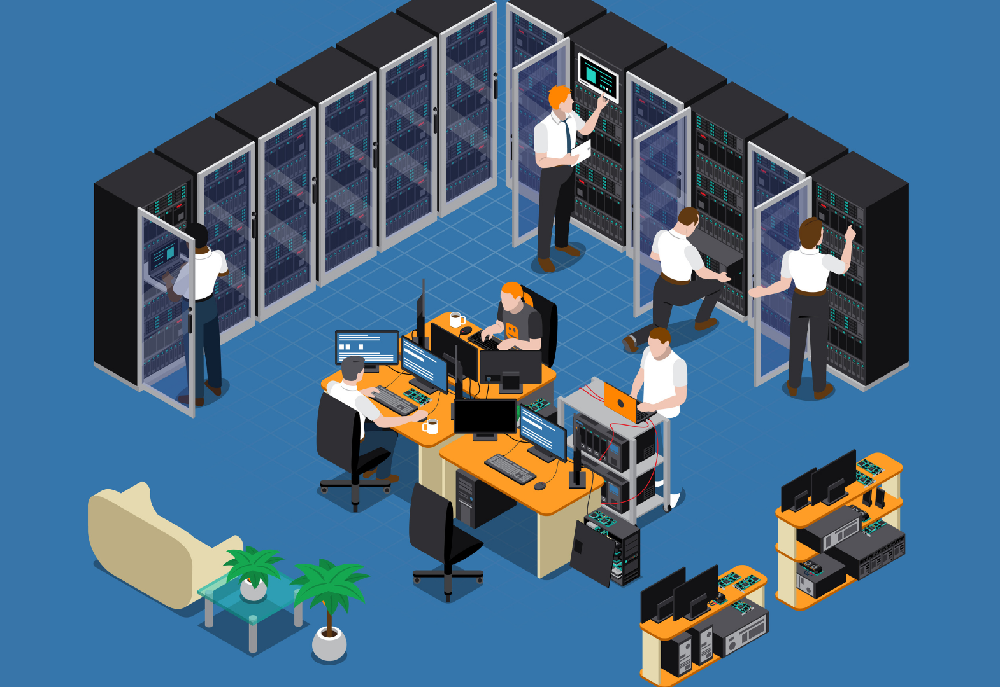

A primeira experiência profissional, pós graduação, foi no ambiente de consultoria. Época que me propiciou muito aprendizado principalmente no trabalho com equipes. Na consultoria, trabalhava com vários outros profissionais de outras áreas. Sendo da informática, sempre precisava estar em constante comunicação com os demais na implantação de sistemas de produtividade.
Na Construtora Andrade Gutierrez, onde permaneci por sete anos, foi o maior convívio com um CPD de grande porte. Minha jornada aqui foi de Analista de Sistemas Pleno até Sênior. Época em que mais desenvolvi sistemas corporativos para o Grupo. Trabalhava bastante com Visual Basic e SQL.
Nas atuações já como Coordenador de TI, que já completa mais de 10 anos, pude evoluir na gestão de equipes. Atualmente estou realizando diversos cursos de aperfeiçoamento. Com interesse profundo em automação e inteligência artificial, me inscrevi nestas áreas de interesse. E aproveitei a iniciativa do governo de SC, que lançou em 2026 um programa de capacitação (SCTec), e abracei esta oportunidade, onde foram três trilhas: Desenvolvimento, Análise de Dados e inteligência Artificial.